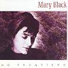

Celtic Lyrics Corner > Artists & Groups > Mary Black > No Frontiers > Fat Valley Of Pain
|  | Fat Valley Of Pain |
| Credits : | Noel Brazil |
| Appears On : | No Frontiers |
| Language : | English |
Lyrics :
It was one of those days when to shine was of no value
One of those days when the language had no grace
We were miles apart, and I stood there with my head spinning
Just another poor soul trying hard not to lose faith
We had it engraved, we had the key to a union
But you wanted more, so we both kept on losing
Fat valley of pain
Fat valley of pain inside
And this pain will not end
'Cause loving you is what I was made for
You were like one of those rainbows we glimpse for a few seconds
One of those dreams that could last for a life long
Now I'm quizzing myself, and it's always the same question
Is it wrong to believe when the feeling so strong?
We had engraved, we had the key to a union
But you wanted more, so we both kept on losing
Fat valley of pain
Fat valley of pain inside
And this pain has no end
'Cause loving you is what I was made for
It's an ill-kept secret that something here's going wrong
Oh but my helpless feelings, they keep on leading me on
Fat valley of pain
Fat valley of pain inside
And this pain will not end
'Cause loving you is what I was made for...